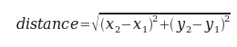
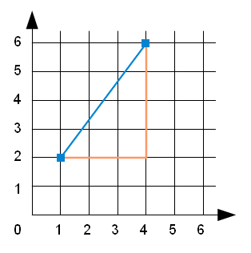

Встроенные функции, которыми мы пользовались, такие как abs, pow и max, возвращают результат. Вызов каждой из этих функций производит значение, которое обычно присваивается переменной или используется в выражении.
biggest = max(3, 7, 2, 5)
x = abs(3 - 11) + 10
До сих пор ни одна из написанных нами функций не возвращала значения.
В этой главе мы будем писать функции, возвращающие значения. Первый пример — функция area (англ.: площадь), возвращающая площадь круга с указанным радиусом:
def area(radius):
temp = 3.14159 * radius**2
return temp
Мы уже встречали предложение return. Но в функции, возвращающей значение, предложение return включает выражение для возвращаемого значения. Выражение может быть сколь угодно сложным, поэтому функция может быть записана более кратко:
def area(radius):
return 3.14159 * radius**2
Однако имейте в виду, что временные переменные, такие как temp, часто делают отладку проще.
Функция может иметь несколько предложений return, по одному в каждой ветке условного выполнения. Мы уже видели встроенную функцию abs, а теперь напишем нашу собственную:
def absolute_value(x):
if x < 0:
return -x
else:
return x
Поскольку предложения return здесь находятся в альтернативных ветках потока выполнения, будет выполнено только одно из них. Как только это произойдет, функция завершится; никакие последующие предложения выполняться не будут.
В рассматриваемой функции можно опустить else и просто поместить второе предложение return после составного предложения if.
def absolute_value(x):
if x < 0:
return -x
return x
Посмотрите внимательно на эту версию и убедитесь, что она работает так же, как и первая.
Код, расположенный после предложения return, или в любом другом месте, которого никогда не сможет достичь поток выполнения, называется мертвым кодом.
Стоит убедиться в том, что в возвращающей значение функции каждый из возможных путей выполнения содержит предложение return. В следующей версии функции absolute_value это не так:
def absolute_value(x):
if x < 0:
return -x
elif x > 0:
return x
Эта функция некорректна, поскольку, если x окажется равным 0, ни одно из условий не выполнится и функция закончится, не выполнив предложения return. В таком случае, возвращаемым значением будет специальное значение None (англ.: ничто):
>>> print absolute_value(0)
None
None является единственным значением типа NoneType:
>>> type(None)
<type 'NoneType'>
Все функции Python, если не возвращают некоторое значение явно, возвращают None.
К этому моменту вы уже должны уметь, посмотрев на функцию на языке Python, сказать, что она делает. Выполняя упражнения, вы написали несколько небольших функций. А когда вы начнете писать большие, то наверняка столкнетесь с трудностями, связанными с ошибками выполнения и семантическими ошибками.
Для того, чтобы разрабатывать программы все возрастающей сложности, рассмотрим прием, называемый инкрементной разработкой. Цель инкрементной разработки — избежать длительной и мучительной отладки программы. Это становится возможным, если за один раз добавлять и тестировать небольшой объем кода.
Предположим, вы хотите найти расстояние между двумя точками, заданными с помощью их координат (x1, y1) и (x2, y2). Согласно теореме Пифагора, расстояние составляет:
Первый шаг разработки — обдумать, как должна выглядеть функция distance на языке Python. Другими словами, что должно быть у функции на входе (параметры) и что — на выходе (возвращаемое значение)?
В данном случае, на вход функции подаются две точки, которые можно представить четырьмя параметрами. А возвращаемое значение — расстояние, представленное числом с плавающей точкой.
Теперь можно набросать эскиз функции:
def distance(x1, y1, x2, y2):
return 0.0
Очевидно, что эта версия функции не вычисляет расстояние; она всегда возвращает ноль. Однако она синтаксически корректна, и она будет выполняться, а это значит, что ее можно протестировать. И только после этого усложнять.
Чтобы протестировать эту функцию, вызовем её с тестовыми значениями:
>>> distance(1, 2, 4, 6)
0.0
Значения параметров подобраны так, чтобы горизонтальное расстояние равнялось 3, а вертикальное равнялось 4. Таким образом, результат должен быть равен 5 — гипотенуза прямоугольного треугольника со сторонами 3-4-5, изображенного на рисунке. При тестировании функции полезно заранее знать правильный ответ.
Убедившись, что функция синтаксически корректна, начнем добавлять строки кода. После каждого инкрементного изменения, мы будем вновь тестировать функцию. Если в какой-то момент возникнет ошибка, мы будем знать, где её искать — в последней добавленной строке.
Первый шаг состоит в нахождении разностей x2- x1и y2- y1. Мы сохраним эти значения во временных переменных dx и dy и выведем их.
def distance(x1, y1, x2, y2):
dx = x2 - x1
dy = y2 - y1
print "dx is", dx
print "dy is", dy
return 0.0
Функция должна вывести 3 и 4. Если так и произошло, то теперь мы знаем, что первый шаг вычислений выполняется правильно. Если нет, то нужно проверить всего несколько строк.
Далее мы подсчитываем сумму квадратов dx и dy:
def distance(x1, y1, x2, y2):
dx = x2 - x1
dy = y2 - y1
dsquared = dx**2 + dy**2
print "dsquared is: ", dsquared
return 0.0
Обратите внимание, что мы удалили предложения print, написанные на предыдущем шаге. Подобный код, используемый временно в ходе разработки, называется вспомогательным кодом, или отладочным. Он играет роль строительных лесов при “строительстве” программы, но сам не является частью окончательной версии программы.
И вновь мы запустим программу и проверим её вывод. Должно получиться 25.
Наконец, используя степень 0.5 для нахождения квадратного корня, мы вычислим и вернем результат:
def distance(x1, y1, x2, y2):
dx = x2 - x1
dy = y2 - y1
dsquared = dx**2 + dy**2
result = dsquared**0.5
return result
Если эта версия работает правильно, значит, программа готова. В противном случае, чтобы внести ясность, попробуйте вывести значение result перед предложением return.
Пока вы делаете первые шаги в программировании, добавляйте в вашу программу по строчке или две за один раз. Набравшись опыта, вы начнете писать и отлаживать более крупные участки кода. Инкрементная разработка позволит вам сэкономить время на отладке и сделает вашу работу эффективнее.
Придерживайтесь следующих правил:
Как вы уже знаете, можно вызывать одну функцию из другой. Этот прием называется композиция.
Напишем функцию, которая принимает в качестве входных параметров две точки, центр окружности и точку на периметре, и расчитывает площадь круга.
Пусть координаты центральной точки хранятся в переменных xc и yc, а координаты точки на периметре окружности — в переменных xp и yp. Первым шагом будет нахождение радиуса окружности, равного расстоянию между этими двумя точками. Для этого воспользуемся функцией distance, которая делает именно то, что нам нужно:
radius = distance(xc, yc, xp, yp)
Второй шаг — найти площадь круга данного радиуса и вернуть её. И снова мы воспользуемся одной из ранее написанных функций:
result = area(radius)
return result
Оформив этот код в виде функции, получаем:
def area2(xc, yc, xp, yp):
radius = distance(xc, yc, xp, yp)
result = area(radius)
return result
Мы назвали эту функцию area2, чтобы отличать её от написанной ранее функции area. Внутри некоторого модуля может быть только одна функция с данным именем.
Временные переменные radius и result полезны для разработки и отладки, но, как только получена работающая программа, можно сделать ее более компактной, комбинируя предложения и вызовы функций:
def area2(xc, yc, xp, yp):
return area(distance(xc, yc, xp, yp))
Функции могут возвращать логические значения и использоваться в условных предложениях для проверки условий. Часто оказывается удобным спрятать сложные проверки внутри функции. Например:
def is_divisible(x, y):
if x % y == 0:
return True
else:
return False
Имя этой функции is_divisible. Принято давать логическим функциям имена, выглядящие как вопрос, предполагающий один из двух возможных ответов: да или нет. Функция is_divisible возвращает либо True либо False, тем самым показывая, делится или не делится x на y.
Можно сделать эту функцию более компактной, воспользовавшись тем, что условие предложения if само по себе является логическим выражением. Мы можем непосредственно вернуть значение этого выражения, вовсе исключив предложение if из программы:
def is_divisible(x, y):
return x % y == 0
А вот новая функция в действии:
>>> is_divisible(6, 4)
False
>>> is_divisible(6, 3)
True
Логические функции часто используются в условных предложениях:
if is_divisible(x, y):
print "x is divisible by y"
else:
print "x is not divisible by y"
У вас может появиться соблазн написать:
if is_divisible(x, y) == True:
Но дополнительное сравнение здесь лишнее.
В Python function (англ.: функция) также является типом, как и уже известные нам int, float, str, bool и NoneType.
>>> def func():
... return "function func was called..."
...
>>> type(func)
<type 'function'>
>>>
Точно так же, как значения других типов, функции могут быть переданы другим функциям в качестве аргументов:
def f(n):
return 3*n - 6
def g(n):
return 5*n + 2
def h(n):
return -2*n + 17
def doto(value, func):
return func(value)
print doto(7, f)
print doto(7, g)
print doto(7, h)
Функция doto вызывается три раза. В каждом вызове аргументом для value является 7, а для func — функции f, g и h, по очереди. Этот скрипт выводит:
15
37
3
Этот пример, конечно, надуманный. Но позднее мы встретимся с ситуациями, когда передача функции в качестве аргумента другой функции очень полезна.
Читабельность программ очень важна для программистов, поскольку на практике читать и изменять программы приходится гораздо чаще, чем писать новые. Все примеры кода в этой книге соответствуют Python Enhancement Proposal 8 (PEP 8). Это руководство по стилю программирования, разработанное сообществом программистов Python.
Чем сложнее становятся программы, тем большую роль начинает играть стиль программирования. Нескольких важных правил полезно придерживаться с самого начала:
В дополнение к строкам, заключенным в одинарные и двойные кавычки, с которыми мы впервые встретились в разделе Значения и типы главы 2, в Python также имеются строки в тройных кавычках:
>>> type("""This is a triple quoted string using 3 double quotes.""")
<type 'str'>
>>> type('''This triple quoted strings uses 3 single quotes.''')
<type 'str'>
>>>
Строки в тройных кавычках могут содержать внутри как одинарные, так и двойные кавычки:
>>> print '''"Oh no", she exclaimed, "Ben's bike is broken!"'''
"Oh no", she exclaimed, "Ben's bike is broken!"
>>>
Кроме того, строковые значения, заключенные в тройные кавычки, могут распространяться на несколько строк:
>>> message = """This message will
... span several
... lines."""
>>> print message
This message will
span several
lines.
>>>
В последнее время широкую известность получило автоматическое модульное тестирование (англ.: unit testing) — очень полезная практика разработки программ. Модульное тестирование позволяет убедиться, что отдельные части кода, такие как функции, работают правильно.
Русскоязычный термин модульное тестирование не связан с понятием модуль языка Python, а подразумевает тестирование отдельных частей кода, написанных на любом языке программирования, то есть, модулей как элементов программы в самом общем смысле.
Автоматическое тестирование означает, что однажды написанные модульные тесты могут многократно автоматически выполняться, причем результат их выполнения автоматически оценивается как успешный либо неуспешный. Благодаря этому становится возможным, внеся изменения в функцию, быстро проверить, по-прежнему ли функция работает корректно.
В Python имеется встроенный модуль doctest, который облегчает создание и выполнение модульных тестов. Модульные тесты, заключенные в тройные кавычки, можно писать, начиная с первой строки тела функции или скрипта. Они включают предложения Python для выполнения и вывод, ожидаемый как результат выполнения предложения.
Модуль doctest автоматически выполняет предложения, начинающиеся с >>>, и сравнивает следующую строку с тем, что вывел интерпретатор.
Чтобы посмотреть, как это работает, поместите следующее в скрипт с именем myfunctions.py:
def is_divisible_by_2_or_5(n):
"""
>>> is_divisible_by_2_or_5(8)
True
"""
if __name__ == '__main__':
import doctest
doctest.testmod()
Последние три строки заставляют doctest выполняться. Помещайте их в конец файла, если файл содержит доктесты. Вы узнаете, как это работает, когда мы будем обсуждать модули.
Запустив скрипт на выполнение, получим следующее:
$ python myfunctions.py
**********************************************************************
File "myfunctions.py", line 3, in __main__.is_divisible_by_2_or_5
Failed example:
is_divisible_by_2_or_5(8)
Expected:
True
Got nothing
**********************************************************************
1 items had failures:
1 of 1 in __main__.is_divisible_by_2_or_5
***Test Failed*** 1 failures.
$
Это пример неуспешного теста. Тест ожидает, что вызов is_divisible_by_2_or_5(8) даст результат True. Поскольку вызов is_divisible_by_2_or_5 не вернул ничего, тест считается неуспешным, и doctest сообщает, что ожидалось значение True, но не было получено ничего.
Заставим этот тест выполняться, возвращая True:
def is_divisible_by_2_or_5(n):
"""
>>> is_divisible_by_2_or_5(8)
True
"""
return True
if __name__ == '__main__':
import doctest
doctest.testmod()
Если теперь запустить скрипт, он не выведет ничего. Это значит, что тест прошел успешно. Еще раз обратите внимание, что строка с тестом должна быть помещена сразу после заголовка в определении функции.
Чтобы увидеть более подробный отчет о выполнении теста, запустите скрипт с опцией -v:
$ python myfunctions.py -v
Trying:
is_divisible_by_2_or_5(8)
Expecting:
True
ok
1 items had no tests:
__main__
1 items passed all tests:
1 tests in __main__.is_divisible_by_2_or_5
1 tests in 2 items.
1 passed and 0 failed.
Test passed.
$
Хотя тест проходит, наш набор тестов явно неадекватен, так как функция is_divisible_by_2_or_5 возвращает True независимо от переданных ей аргументов. Но вот окончательная версия набора тестов и корректного кода:
def is_divisible_by_2_or_5(n):
"""
>>> is_divisible_by_2_or_5(8)
True
>>> is_divisible_by_2_or_5(7)
False
>>> is_divisible_by_2_or_5(5)
True
>>> is_divisible_by_2_or_5(9)
False
"""
return n % 2 == 0 or n % 5 == 0
if __name__ == '__main__':
import doctest
doctest.testmod()
Теперь запустите скрипт с опцией -v и посмотрите, что получится.
Все упражнения, приведенные ниже, добавляйте в файл ch05.py, в конце которого поместите следующие строки:
if __name__ == '__main__':
import doctest
doctest.testmod()
Выполнив каждое из упражнений, запускайте скрипт, чтобы убедиться, что доктест для только что написанной функции проходит.
Напишите функцию compare, которая возвращает 1, если a > b, 0, если a == b и -1, если a < b. Поместите тело функции после следующих доктестов и убедитесь, что они успешно проходят.
def compare(a, b):
"""
>>> compare(5, 4)
1
>>> compare(7, 7)
0
>>> compare(2, 3)
-1
>>> compare(42, 1)
1
"""
Воспользуйтесь процессом инкрементной разработки чтобы написать функцию hypotenuse, которая возвращает длину гипотенузы прямоугольного треугольника, если даны длины двух катетов. Убедитесь, что следующие доктесты проходят:
def hypotenuse(a, b):
"""
>>> hypotenuse(3, 4)
5.0
>>> hypotenuse(12, 5)
13.0
>>> hypotenuse(7, 24)
25.0
>>> hypotenuse(9, 12)
15.0
"""
Напишите функцию slope(x1, y1, x2, y2) (англ.: наклон), которая возвращает наклон прямой, проходящей через точки (x1, y1) и (x2, y2). Под наклоном здесь имеется в виду отношение проекции отрезка прямой на ось y к проекции этого же отрезка на ось x. (Чем больше это отношение, тем круче наклон прямой.) Убедитесь, что ваша реализация slope проходит следующие тесты:
def slope(x1, y1, x2, y2):
"""
>>> slope(5, 3, 4, 2)
1.0
>>> slope(1, 2, 3, 2)
0.0
>>> slope(1, 2, 3, 3)
0.5
>>> slope(2, 4, 1, 2)
2.0
"""
Используйте slope в новой функции intercept(x1, y1, x2, y2) (англ.: отсекать, отделять), которая возвращает координату y точки пересечения прямой с осью y. Прямая задана точками (x1, y1) и (x2, y2).
def intercept(x1, y1, x2, y2):
"""
>>> intercept(1, 6, 3, 12)
3.0
>>> intercept(6, 1, 1, 6)
7.0
>>> intercept(4, 6, 12, 8)
5.0
"""
Функция intercept должна пройти приведенные доктесты.
Напишите функцию is_even(n) (англ.: четный), которая принимает целое число в качестве аргумента и возвращает True, если аргумент является четным, и False, если аргумент нечетный. Начните создание функции с написания доктестов для нее.
Теперь напишите функцию is_odd(n) (англ.: нечетный), возвращающую True, когда n нечетное число, и False в противном случае. Начните создание функции с написания доктестов для нее.
Измените функцию так, чтобы она использовала вызов is_even для определения того, является ли ее аргумент нечетным.
Напишите тело функции is_factor (англ.: множитель) так, чтобы доктесты проходили:
def is_factor(f, n):
"""
>>> is_factor(3, 12)
True
>>> is_factor(5, 12)
False
>>> is_factor(7, 14)
True
>>> is_factor(2, 14)
True
>>> is_factor(7, 15)
False
"""
Напишите тело функции is_multiple (англ.: кратное число) так, чтобы доктесты проходили. Можно ли использовать is_factor в функции is_multiple?
def is_multiple(m, n):
"""
>>> is_multiple(12, 3)
True
>>> is_multiple(12, 4)
True
>>> is_multiple(12, 5)
False
>>> is_multiple(12, 6)
True
>>> is_multiple(12, 7)
False
"""
Напишите тело функции f2c, возвращающей округленное целое число градусов Цельсия для температуры, указанной в градусах Фаренгейта.
def f2c(t):
"""
>>> f2c(212)
100
>>> f2c(32)
0
>>> f2c(-40)
-40
>>> f2c(36)
2
>>> f2c(37)
3
>>> f2c(38)
3
>>> f2c(39)
4
"""
Подсказка: можно воспользоваться встроенной функцией round (англ.: округлить). Попробуйте напечатать round.__doc__ в интерактивном режиме Python и поэкспериментируйте с round, чтобы разобраться, что эта функция делает.
А теперь напишите тело функции c2f для преобразования градусов Цельсия в градусы Фаренгейта.
def c2f(t):
"""
>>> c2f(0)
32
>>> c2f(100)
212
>>> c2f(-40)
-40
>>> c2f(12)
54
>>> c2f(18)
64
>>> c2f(-48)
-54
"""